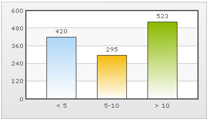

| Using > and < characters in FusionCharts XML |
|
You cannot directly use < and > characters in FusionCharts XML as these are invalid characters from XML perspective. To use < and >, you first need to convert them into < and > respectively. This conversion makes the XML a valid one. Next, you need to tell FusionCharts that you're sending HTML characters as part of XML but it should be rendered as text and not HTML. Let's see an example to clear the concepts. We'll create a chart whose x-axis labels would read <5, 5-10 and >10. To do so, we'll have to use the following XML: |
| <chart > <set label='< 5' value='420' /> <set label='5-10' value='295' /> <set label='> 10' value='523' /> <styles> <definition> <style name='myHTMLFont' type='font' isHTML='0' /> </definition> <application> <apply toObject='DATALABELS' styles='myHTMLFont' /> </application> </styles> </chart> |
In the above code, we're first defining the labels after converting < to < and > to > After that we're defining a font style type whose isHTML property is set to 0. This helps us tell FusionCharts that we need to show this text as normal text and not HTML. We finally apply this font style to the object in which we wish to display the < or > signs. Example, if your series name contains these characters, you'll need to apply this style to LEGEND object. Similarly, if you want to show it in tool tip, you'll have to apply it on TOOLTIP object. When you now see the chart, you'll get the following: |
|  |